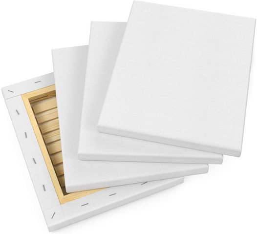
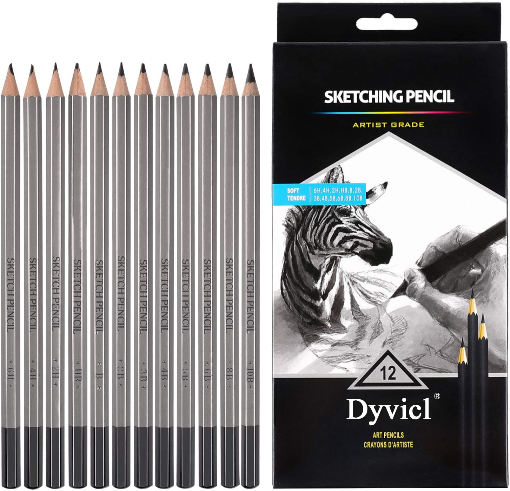
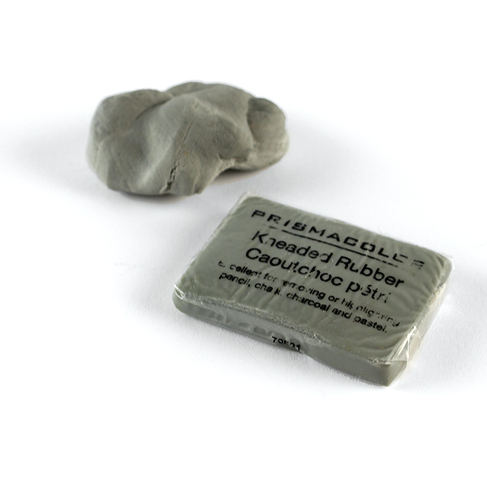
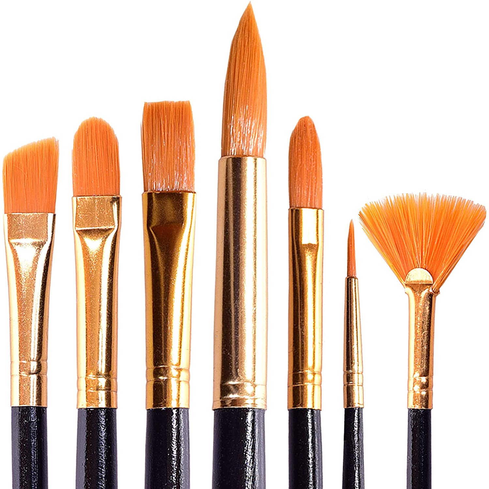
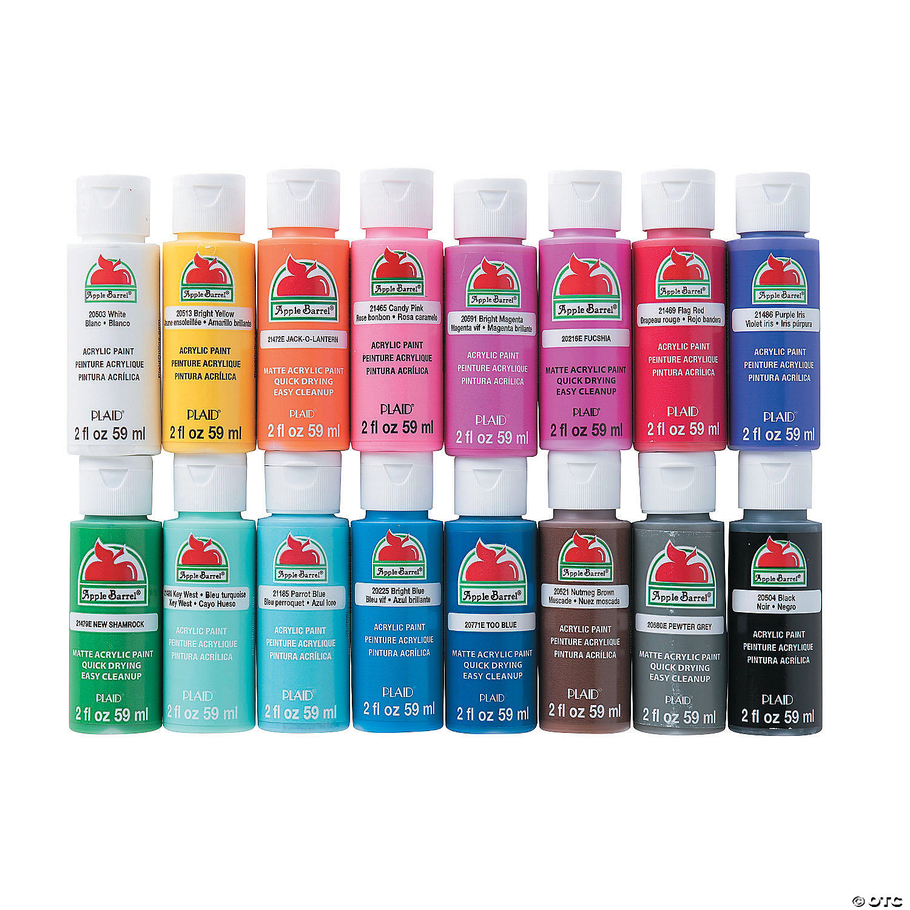
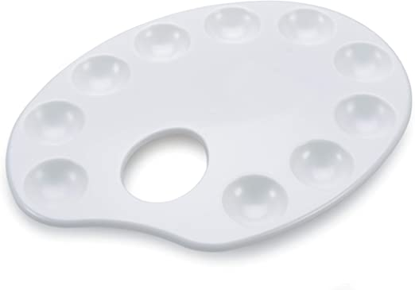
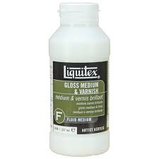
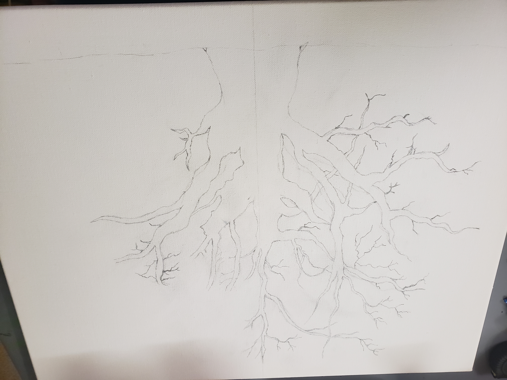
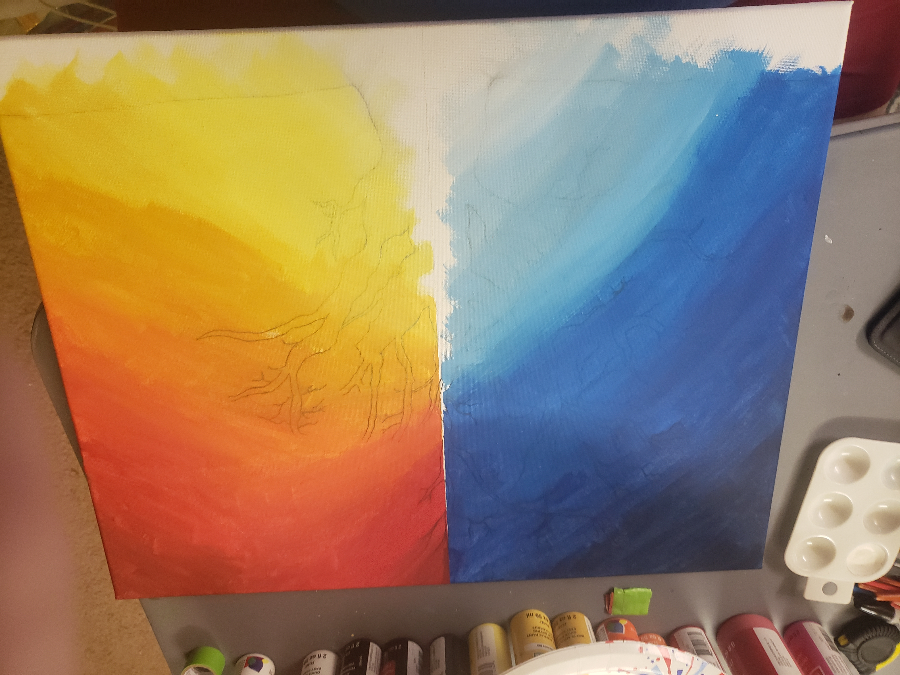
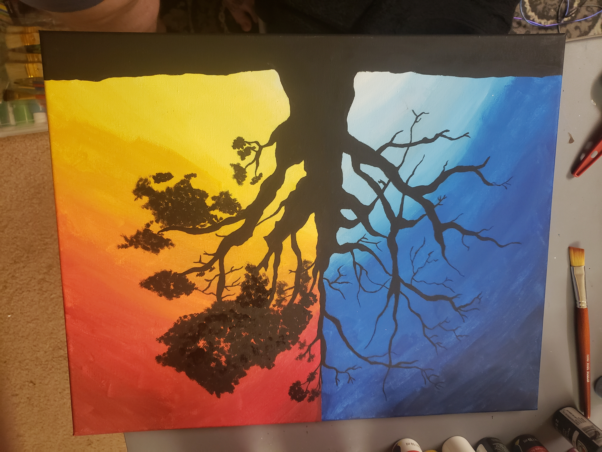

The first thing I do is gather all the supplies I will need for my painting. I will need a canvas, drawing pencils, kneaded eraser, paint brushes, acrylic paint, paint palette, and acrylic sealer.
|  |  |  |  |  |  |  |
First I use my drawing pencils and kneaded eraser to create a rough sketch of what I am creating.
With this particular piece of art I started painting the background next. It would have been to hard to paint the backgroud after the tree is painted in. To keep the two sides from mixing with each other I used painters tape and taped it off in the middle of the canvas.
After the background was finished I painted the main focus of the painting, the tree. Painting with black is always unforgiving so for most of the tree I used a very small pointed brush to get good details on the night side. For the day side I used a sponge to get the leaf-like look.
The tree was finished and it was time to add some more details to the painting. I painted some animal silhouettes in to give it some more life... get it cause animals are alive. Then I painted in a little saying from the great book Alice's Adventures in Wonderland, by Lewis Carroll
 |
 |
The last thing I do after the painting is fully dry is apply the paint sealer. This helps keep the paintings color longer and keep dust from forming on it. Plus depending on what type you use, I use glossy, it gives it a nice shine.